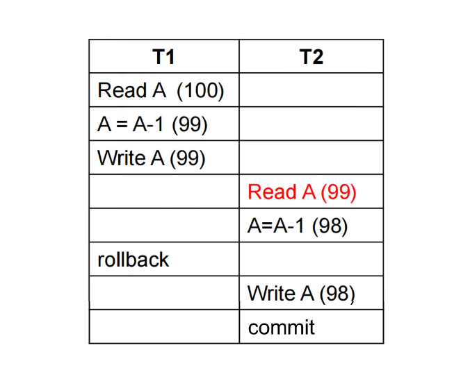

Chapter13 Transactions
13.1 Transaction Concept
事务（transaction） 是一系列操作组成的序列。
ACID Properties:
- Atomicity 原子性: 事务不可分割，要么全部完成，要么全部不完成；
- Consistency 一致性: 也就是正确性，包括各种完整性约束；
- Isolation 隔离性: 事务对其他事务无感，互不干扰，不能将一个事务执行到一半的数据库中间状态暴露给另一个事务；
- Durability 持久性: 在成功提交之后，事务对数据库的修改是持久保留的。
Example
考虑从A账户转账到B账户的操作，这些操作构成一个事务：
原子性：
如果在第3步和第6步之间发生了系统崩溃，那么A账户的余额会减少50，而B账户的余额不会增加50，导致错误，因此需要保持原子性。
一致性：
通常，一致性包括：
- 显式约束：主键、外键等
- 隐式约束：余额之和是保持不变等
隔离性： 如果在第3步和第6步之间有另一事务介入，且其能感知到前一事务，那么其看到的内容就会有误，因此需要保持隔离性。
持久性：
一旦成功提交，A账户和B账户的余额的修改是持久保留的，即使系统崩溃也不会丢失。
Transaction State:
Note
提交分为partially committed和committed，前者是指所有操作都完成了，但是还没有写入数据库（比如将结果先写入buffer）；后者是指真正写入数据库。
13.2 Concurrent Executions
Lost Update 丢失修改：

在T1读出A并修改的同时，T2也进行同样的操作。但由于T1的修改还没有写入数据库，因此T2读到的A是T1修改前的A（本来应该是T1修改后的A）。最终，二者写回的A的值是相同的，导致T1的修改丢失。
Dirty Read 读脏数据：

T1虽然对A进行了修改并写回，T2也读到了修改后的A，但T1并没有提交，之后反而回滚了，但T2已经读了并且不知道，导致T2读到的A最终是错误的。
Unrepeatable Read 不可重复读：
在T1两次读A之间，T2对A进行了修改并写回。但是，在同一个事务中，连续两次读同一个数据的值应该是相同的（T1并不知道T2的存在），导致问题。
Phantom Problem 幽灵问题：

不可重复读的泛化版本，更多强调数据的凭空出现而不是更新。
13.3 Schedules
调度（schedule） 是按一定顺序执行的指令序列。
schedule中涉及的事务的每一条指令都要参与，且每个事务内部的指令顺序不能改变。
Schedule1:
串行调度，一定能保证ACID属性。

Schedule2:
同样也是串行调度，将T1和T2顺序交换，但和schedule1是不等价的。因此，事务的执行是要有顺序的。

Schedule3:
并发调度，但和串行调度schedule1是等价的。
Schedule4:
同样也是并发调度，但和schedule1是不等价的。

13.4 Serialazability
如果一个调度和另一个串行调度等价，那么这个调度是可串行化的。根据等价的性质可以分为：
- conflict serializability 冲突可串行化
- view serializability 视图可串行化
Note
简单起见，我们只考虑read操作和write操作。
Conflicting Instructions:
若指令$I_i$属于事务$T_i$，指令$I_j$属于事务$T_j$，两条指令都是对同一数据项$Q$的操作，则
- $I_i=\text{read}(Q)$，$I_j=\text{read}(Q)$：不冲突
- $I_i=\text{write}(Q)$，$I_j=\text{write}(Q)$：冲突
- $I_i=\text{read}(Q)$，$I_j=\text{write}(Q)$：冲突
- $I_i=\text{write}(Q)$，$I_j=\text{read}(Q)$：冲突
如果$I_i$和$I_j$冲突，则二者形成逻辑上的先后顺序；如果$I_i$和$I_j$不冲突，则二者交换顺序后调度结果不变。
Note
如果针对的是不同数据项的操作，则肯定不冲突。
Conflict Serializability：
对于两个schedule S和S'，如果S通过一系列不冲突指令的交换能得到S'，那么S和S'是冲突等价（conflict equivalent） 的。
如果在此基础上，S'是串行的，那么S是冲突可串行化（conflict serializable） 的。
例如下图：
左边为S，右边为S'，S可以通过一系列不冲突指令的交换得到串行的S'，因此S是冲突可串行化的。
View Serializability：
视图等价（view equivalent） 主要考虑以下三个方面，如果对于每个数据项$Q$：
- 初始读取：在S中，如果Ti读取了Q的初始值，那么在S'中，也要是Ti读取Q的初始值；
- 读取依赖：在S中，如果Ti读取了Q的值，并且该值是由Tj写入的，那么在S'中，也要Ti读取Q的值，并且该值也是由Tj写入的；
- 最终写入：在S中，如果Ti最终写入Q，那么在S'中，也要是Ti最终写入Q。
也就是说，视图等价允许调度中某些冲突操作的顺序改变，只要这种改变不影响事务读到的值和数据的最终状态就行。视图可串行化（view serializable） 同理。
冲突可串行化一定是视图可串行化，但反之不一定成立。 例如下图是视图可串行化，但不是冲突可串行化：
每个不是冲突可串行化，但是是视图可串行化的调度都有blind write。
Note
还有其他的可串行化，例如下图：
其既不是冲突可串行化，也不是视图可串行化，但其与串行调度的结果是一样的，因此也是可串行化的。 这里实际上是利用的数学上的性质（+和-可交换），但数据库难以理解这个性质，因此难以应用。
Testing for Conflict Serializability:
除了从定义角度出发，还可以通过前驱图（precedence graph） 来判断冲突可串行化。

如图：节点表示事务，如果两个事务之间有一对冲突操作，则进行连线，箭头的起始表示操作的先后。
前驱图无环 $\Longleftrightarrow$ 冲突可串行化
如果前驱图无环，则可以通过topological sort的方式获得串行化的事务次序。
Example
根据下图事务画出前驱图，并判断是否冲突可串行化。

连线的过程类似于多重循环。对于T1的每一个操作，在其他事务中找出所有在其之后进行且冲突的操作，连线（涉及同样节点同样方向则只需要画一条）。然后以此类推，对于其他事务的每一个操作也进行类似遍历。
前驱图没有成环，因此是冲突可串行化的。并且，我们还可以从前驱图中得到串行化后的次序：
T1→T2→T3→T4或T1→T3→T2→T4，其中T5可以插在任何一个位置，一共有10种可能。
Note
前驱图环的检测是$O(N^2)$，其中$N$是节点数。
但是，该检测不能直接用于视图可串行化，视图可串行化的检测是指数级的，属于NP-complete问题。
13.5 Recoverability
Recoverable Schedule：
可恢复调度（recoverable schedule） 满足：如果T2读了T1写的数据，那么T2的提交必须在T1提交之后。
例如，下图就是不可恢复调度，因为$T_8$一旦回滚，$T_9$的错误就不可恢复了：

Cascading Rollback：
级联回滚（cascading rollback） 的意思是，一个单独事务的回滚会导致一系列其他事务也跟着回滚。
例如，下图$T_{10}$的回滚会要求$T_{11}$和$T_{12}$一起回滚，因为后二者读到了脏数据：

Cascadeless Schedule：
如果T2要读T1写的数据，那么T1必须提交之后，T2才能读。
无级联调度一定是可恢复调度，但可恢复调度不一定是无级联调度。无级联调度强制要求读在提交之后，二可恢复调度只要保证提交顺序正确，可以先写再读最后按序提交。